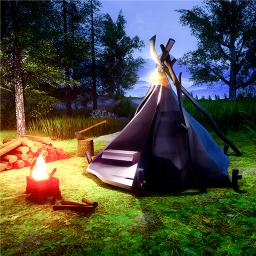

Что такое кемпинг?
Слово «кемпинг» происходит от английского camping, что означает стоянку лагерем под открытым небом. Поэтому кемпингом в англоязычной среде можно назвать даже бивак туристов или альпинистов. Но чаще всего под кемпингом подразумевают комфортный отдых лагерем на длительных стоянках. Кемпингом именуют и сами места для стоянок. Они бывают двух видов:
- обустроенные и официально зарегистрированные;
- самостоятельно организованные.
Обустроенный кемпинг
Официально обустроенные стоянки для путешественников под открытым небом. Обычно их стараются расположить в живописных природных местах на небольшом удалении от транспортных магистралей или в тихих городских пригородах. Сюда приезжают в автодомах, с жилыми трейлерами или палатками, чтобы переночевать, провести время на природе или отдохнуть от дороги.
Чаще всего это выгоднее, чем снимать номер в придорожной гостинице или городском отеле, поэтому кемпинги пользуются неизменным спросом у путешественников. К тому же в «тесной» Европе найти место для личного лагеря сравнительно сложно: здесь много частных территорий, стоянка на которых требует согласования с владельцем. А иногда «дикие» стоянки могут быть просто запрещены местным законодательством
Организованные кемпинги, помимо места для стоянки, могут предоставлять путешественникам целый ряд услуг: туалеты, душ, воду, электричество, организованный вывоз мусора, канализацию для автодомов и трейлеров, прачечную, кухню, детские и спортивные площадки и многое другое. Иногда в них даже есть небольшие гостевые дома.